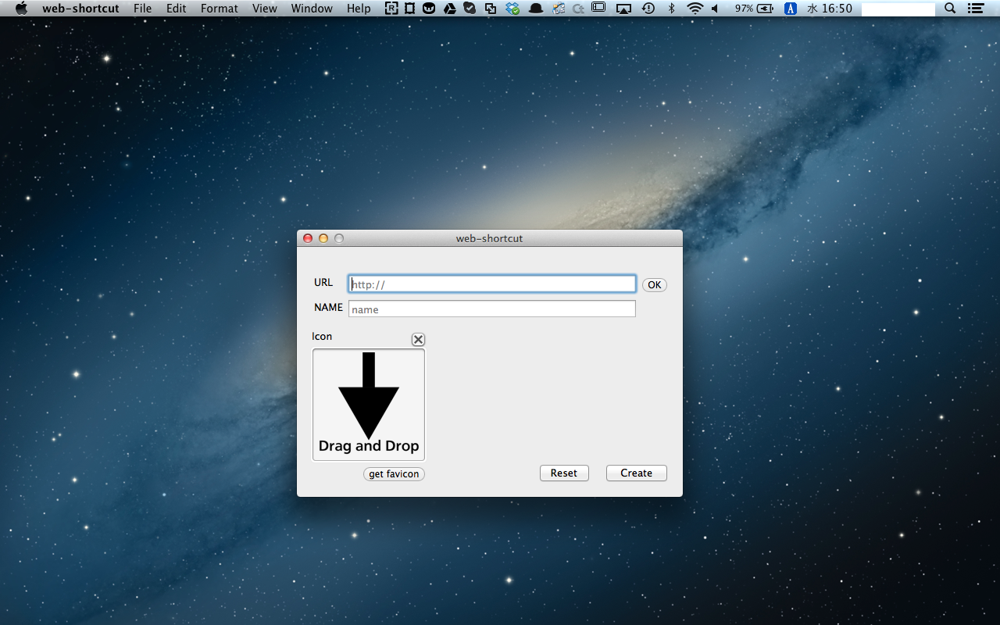
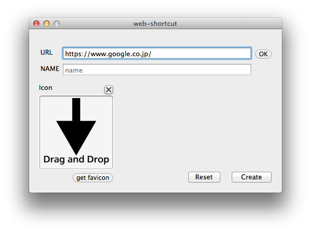
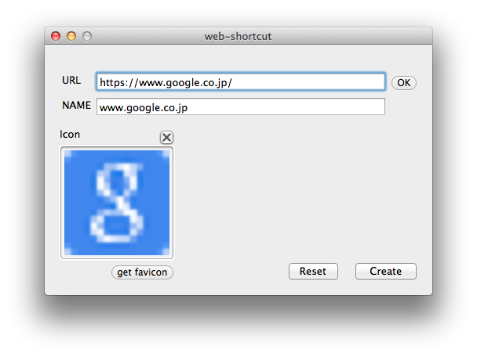
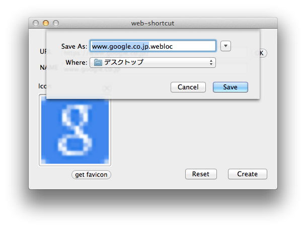
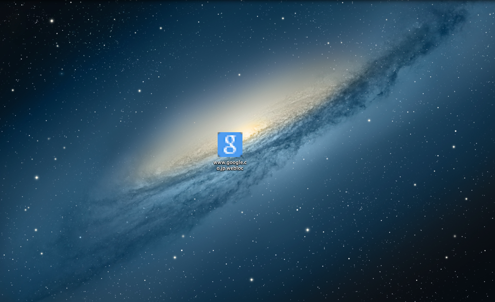

Web Shortcut

このappは、iphoneのsafariにおける「ホーム画面に追加」の機能をMacでも行えるようにしたものです。
このappを使うと、頻繁にアクセスするサイトにアクセスするのがとても簡単に素早く出来るようになります。
How To Use
- まずappをインストールします。
- ショートカットを作成したいウェブページのURLを入力し、OKボタンを押します。
- すると自動で、NAMEやICONが入力されます。
- よろしかったら、Createボタンを押して下さい。
- Createボタンを押すとどこに保存するか聞かれるので、任意の場所に保存して下さい。出来上がったファイルをダブルクリックすると、ブラウザで開きます。
- 
- Resetボタンを押すと入力された項目が全部削除されます。
- iconはfaviconの画像を利用します。もし他の画像を利用したかったら、Drag and Dropして画像を選択して下さい。